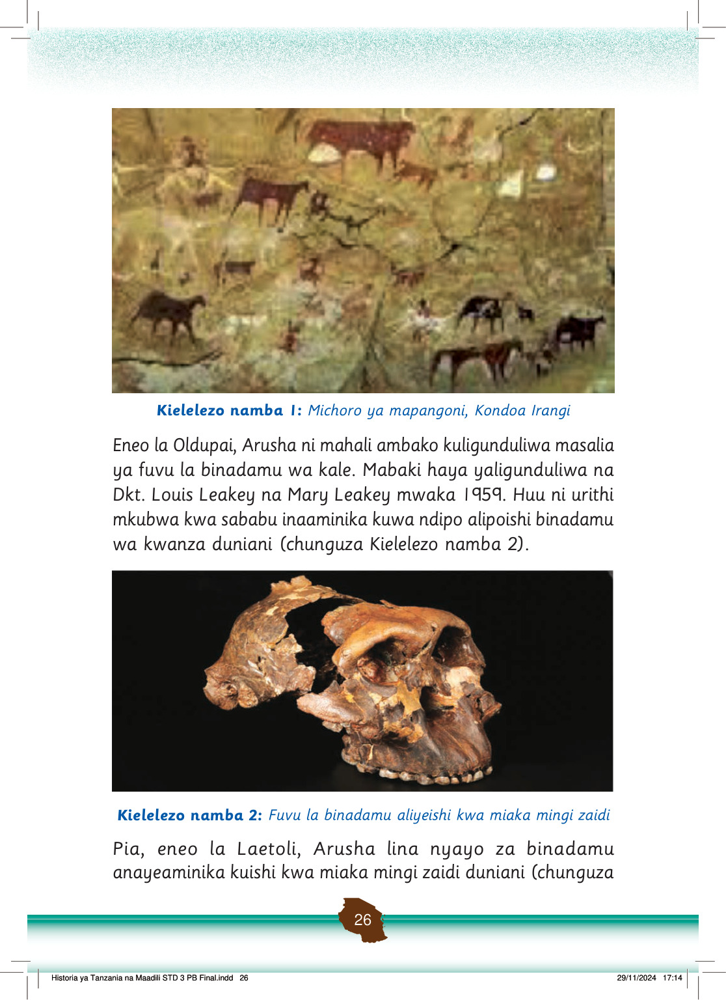

Kielelezo namba 3).
Huu ni urithi mkubwa kwa nchi yetu.
Wageni huja nchini kutembelea maeneo hayo ili kujifunza historia ya watu wa kale.
Nyayo za binadamu wa kale zilizohifadhiwa kwenye ardhi ngumu eneo la Laetoli.
Kielelezo namba 3: Nyayo za binadamu wa kale, katika eneo la Laetoli
Eneo la bonde la Isimila, Iringa kuna urithi wenye historia unaohusu Zana za Mawe zilizotumiwa na binadamu wa kale.
Zana hizi za mawe zina mfanano na mikuki, mishale, shoka, visu na nyundo kama inavyoonekana katika Kielelezo namba 4.
Zana hizi zilitumika kuwinda, kuchimbia mizizi na kupondea vitu mbalimbali.
Urithi huu wa Zana za Mawe ni adhimu na muhimu kwa historia ya binadamu duniani.
Baadhi ya zana za mawe za watu wa kale zimepangwa kwenye ubao wa maonyesho.
Kielelezo namba 4: Baadhi ya Zana za Mawe katika Makumbusho ya Isimila